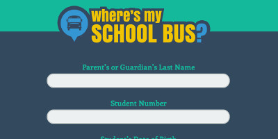
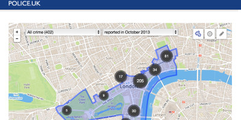
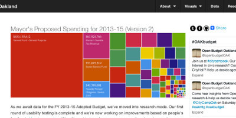
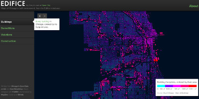
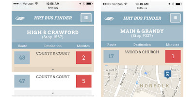

Challenges
On Saturday and Sunday we'll have working groups you can join around these civic tech challenges. We also invite your ideas for alternate challenges.
Open Policy Challenge
Work with your local officials to create an open data policy, or draft an implementation plan or accountability structure for a recently passed policy.
Where's my School Bus?
Work with or lobby a school system to publish their real time bus location data on the web.
Open Incidents
Work with crime data publishers, journalists and civic leagues to make crime data easier to discover.
Open Budget
Redeploy one or more Open Budget apps in one or more cities to feature on gov web site(s), ex. vbgov.com/budget
Open Building
Work with cities in the region to publish Open Data about buildings. Imagine new interfaces for Open Building data like Edifice.
We the People
The White House petition site has transformed the way constituents are heard by their elected officials. Redeploy petitions technology for Hampton Roads.
Open Health Inspection

Help provide easier ways for citizens to use public health inspection data.
Library-as-a-Platform

Use HRVAWiki as a platform for curating local history online. Also, explore the concept of anchoring Open Data operations through the public library.
Transportation
Empower citizens with public transportation data and information, like HRTb.us. Use traffic data and public info to improve urban planning
Activity Ideas
Here are some quick activities that you can easily contrubute to just a few hours. Perfect for Saturday. Staff will be on site to help get you going.
Open Data Inventory
Take stock of where your city stands on publishing some fundamental datasets.
Skillset: Lobbying, Policy
Open Civic Data Scraper
Create scrapers to pull down important civic information to feed the Open Civic Data API.
Skillset: Coding, Data Analysis
HRVAWiki Edit-a-thon
Contribue your local knowledge to the Hampton Roads LocalWiki. Class on Saturday at 10:15am (30min)
Skillset: Writing, Photography, Videography
Wordpress Your Civic League
Learn how to get your civic league or community organization up and running on WordPress. Class on Saturday at 2pm (45min).
Skillset: Basic Web Hosting, Blogging
Geeks on the Bus
Join a group of people to ride the bus singing the praises of HRTB.us and passing out stickers.
Skillset: Design, Marketing, Promotions, Social Media
Mobile Parks and Rec
Make the ultimate mobile app for VB Parks & Rec data.
Skillset: Coding, Writing, Design
HRVAwiki Walking Tours
Help make routes for local art, architecture, history and more.
Skillset: Writing, Coding, Design
Elected Officials Survey
Fork the open data survey published by Open Twin Cities. Market the survey to local and state elected officials and candidates for office. Publish the results.
Skillset: Lobbying
Adopt-a-Drain
Deploy and maintain Adopt-a app so people can adopt storm water drains. Adopt storm water drains using the app.
Skillset: App Deployment, Environmental Cleanup